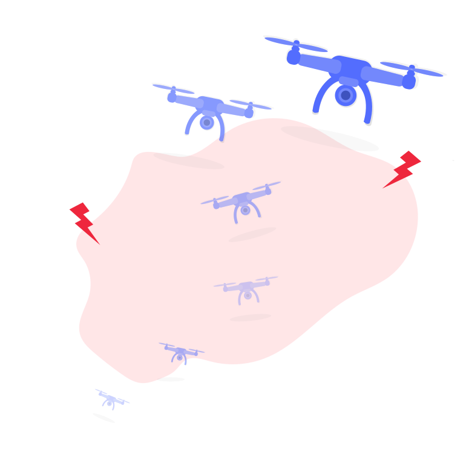
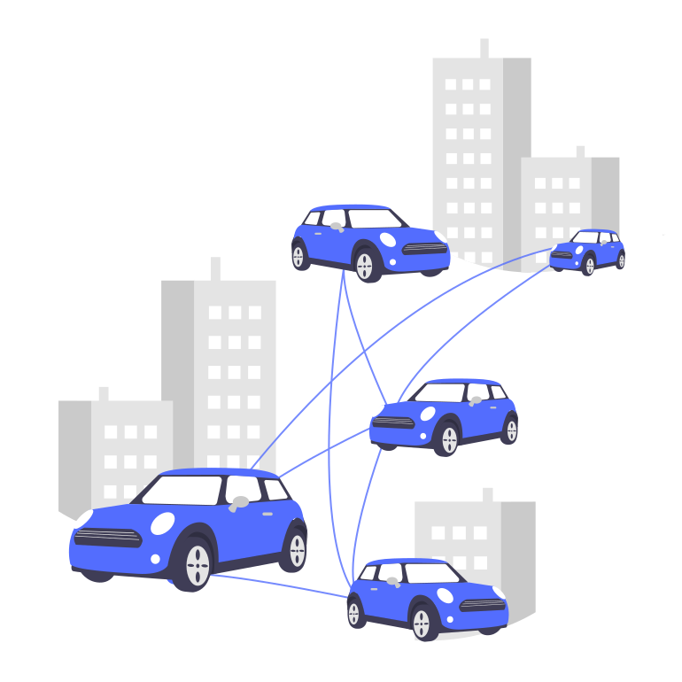
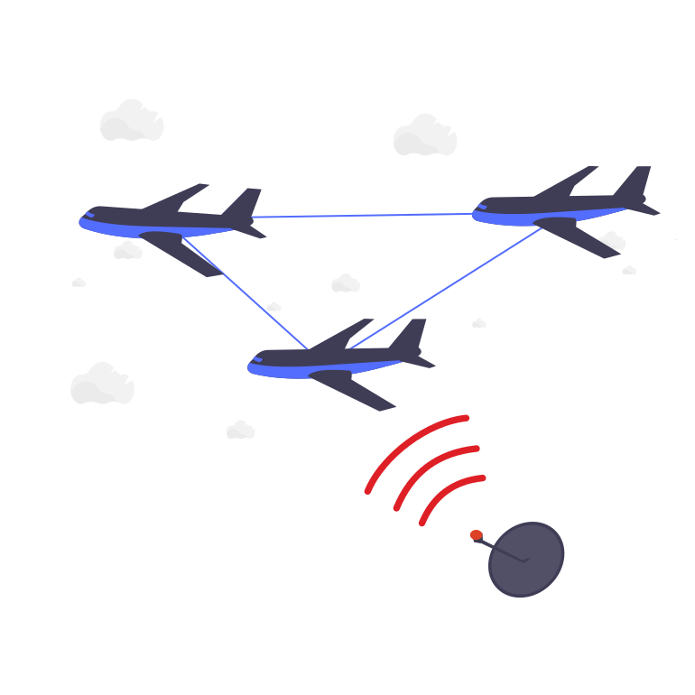

|
The ONE lab focuses on developing methodologies for analyzing, estimating, and controlling cyber-physical systems (CPS), especially self-driving cars and autonomous aerial vehicles. The lab integrates expertise from optimization, control theory and machine learning to develop the theoretical foundations for networked CPS operating in adversarial settings, extreme weather, and other scenarios with significant uncertainties. These theories then guide the creation of practical, efficient, and verifiable algorithms for real-world implementation. |
Room 230 ME Bldg |
Projects
|  |
Safe Planning under Large UncertaintiesInspired by the Miracle on the Hudson, we aim to design a decision-making architecture that can quickly make a sequence of decisions for autonomous systems. We will integrate neuroscience, control theory, and machine learning by adequately leveraging their advantages towards having a safety guarantee under large uncertainties.More details |
|  |
Connected Smart CarsThis project aims to develop a multi-level adaptive control architecture, where the proactive level leverages data over a cloud network to cope with unforeseen environmental uncertainties and support high-level decision making, while the reactive level uses machine learning and robust adaptive control to compensate for uncertainties. |
|  |
Cyber-Physical Systems SecurityRecent developments of Cyber-Physical Systems (CPS) and their safety-critical applications, such as power systems, critical infrastructures, transportation networks, and industrial control systems, have led to a renewed interest in CPS security. In this project, we aim to study and develop attack-resilient estimation and detection algorithms for CPS. |